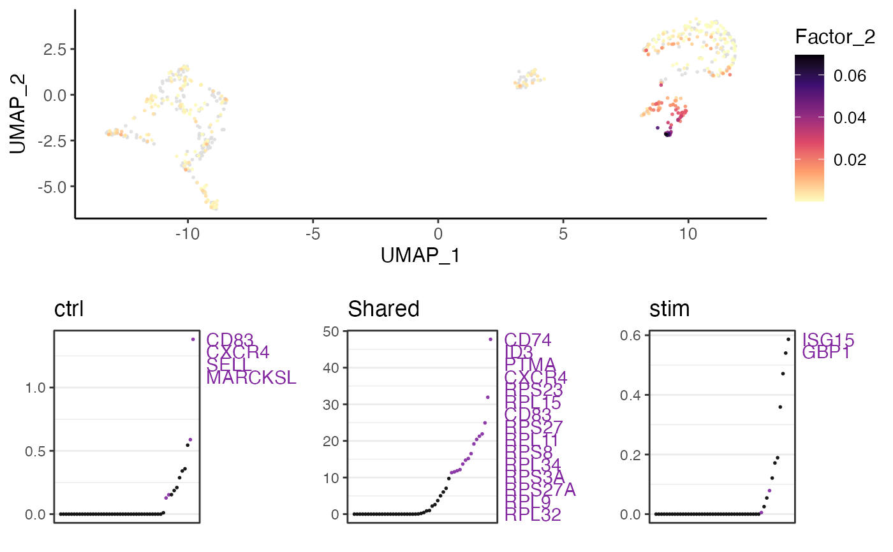

Visualize factor expression and gene loading
plotGeneLoadings(
object,
markerTable,
useFactor,
useDimRed = "UMAP",
nLabel = 15,
nPlot = 30,
...
)
plotGeneLoadingRank(
object,
markerTable,
useFactor,
nLabel = 15,
nPlot = 30,
...
)A liger object with valid factorization result.
Returned result of getFactorMarkers.
Integer index for which factor to visualize.
Name of the variable storing dimensionality reduction result
in the cellMeta slot. Default "UMAP".
Integer, number of top genes to be shown with text labels.
Default 15.
Integer, number of top genes to be shown in the loading rank
plot. Default 30.
Additional plot theme setting arguments passed to
.ggScatter and .ggplotLigerTheme.
result <- getFactorMarkers(pbmcPlot, "ctrl", "stim")
#> Sun Nov 5 17:13:26 2023 ... Performing wilcoxon test between datasets "ctrl" and "stim",
#> basing on factor loading.
#>
|
| | 0%
|
|=================================== | 50%
|
|======================================================================| 100%
plotGeneLoadings(pbmcPlot, result, useFactor = 2)
#> Sun Nov 5 17:13:26 2023 ... Plotting feature: Factor_19, on 600 cells...
